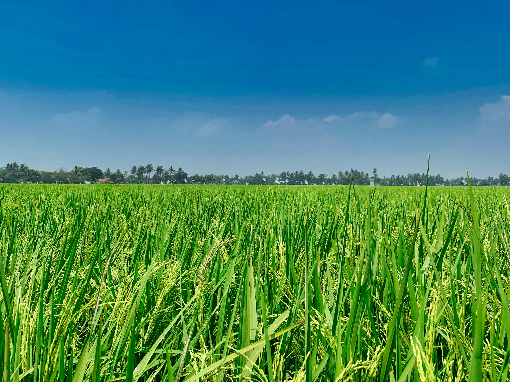
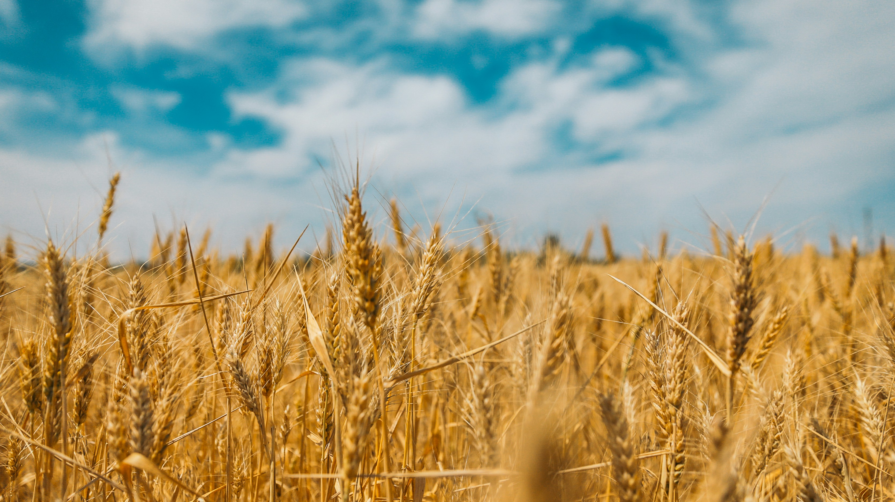
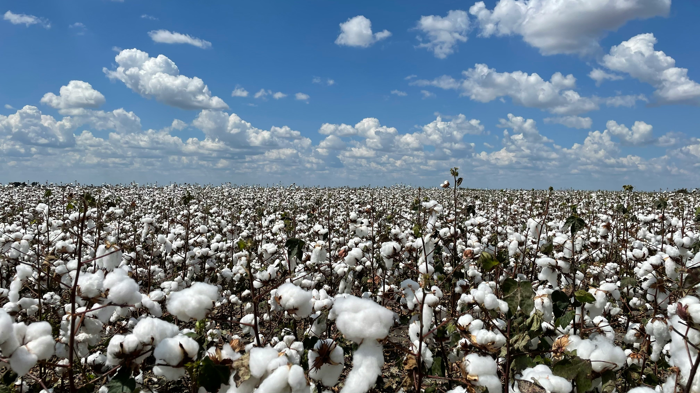
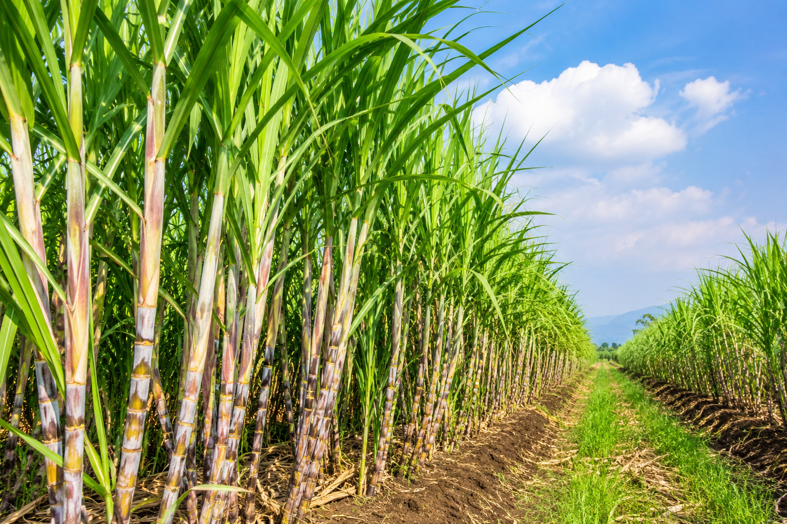
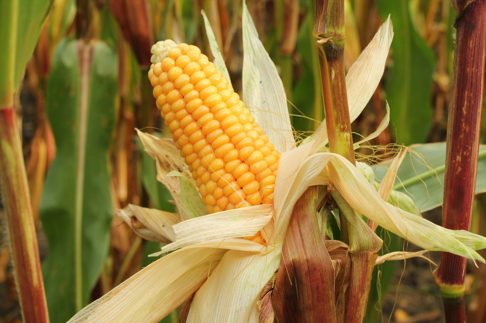
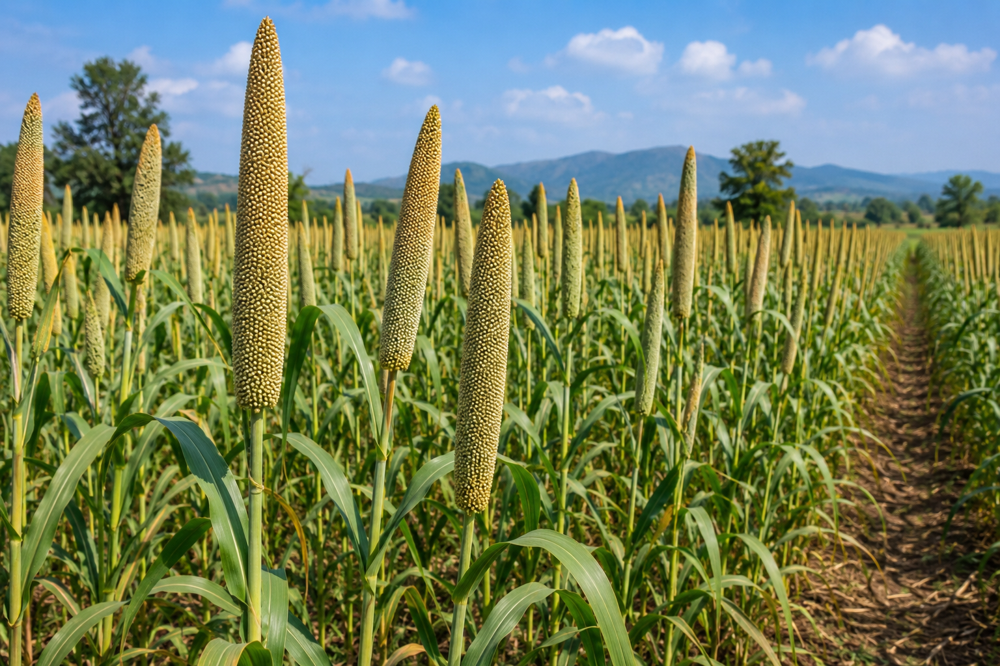
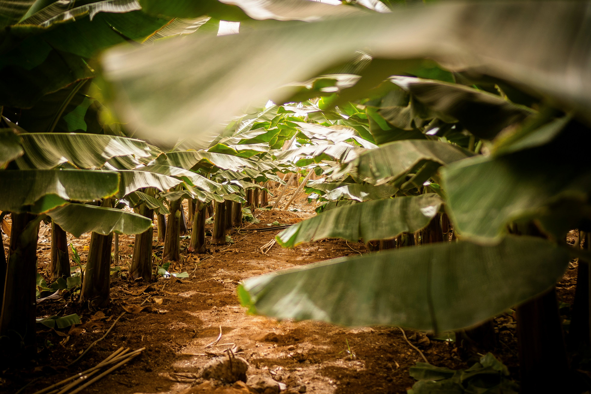

Explore Agricultural Crops
Discover crop information, growing seasons, soil requirements, irrigation methods and cultivation techniques.
Discover crop information, growing seasons, soil requirements, irrigation methods and cultivation techniques.
Explore different types of crops cultivated across India.
Rice, Wheat, Maize
Cotton, Sugarcane, Tea
Coffee, Rubber, Coconut
Mango, Banana, Tomato

India's staple food crop requiring abundant water.

Major Rabi crop suitable for cooler climates.

Important commercial crop grown in black soil.

High-value crop used in sugar and ethanol production.

Widely cultivated cereal crop used for food, livestock feed and industrial products.

Climate-resilient grains requiring less water and suitable for dry regions.

Tropical fruit crop grown throughout the year under warm climatic conditions.

Plantation crop widely cultivated in tropical coastal regions.
Crop Varieties
Indian States
Productivity %
Farmers Benefited
| Crop | Season | Water | Duration | Profit |
|---|---|---|---|---|
| Rice | Kharif | High | 120 Days | ★★★★☆ |
| Wheat | Rabi | Medium | 110 Days | ★★★☆☆ |
| Cotton | Kharif | Medium | 180 Days | ★★★★★ |
| Sugarcane | Annual | High | 12 Months | ★★★★★ |
| Maize | Kharif | Medium | 100 Days | ★★★★☆ |
Adopt modern agricultural techniques to improve productivity, reduce costs and promote sustainable farming.
Use drip irrigation and sprinkler systems to reduce water consumption and improve crop yield.
Improve soil fertility naturally by using compost, biofertilizers and organic manure.
Monitor pests regularly and use eco-friendly integrated pest management techniques.
Use tractors, harvesters and smart agricultural technologies for better efficiency.
Discover government schemes, market prices, weather updates and farming tips to maximize your agricultural productivity.